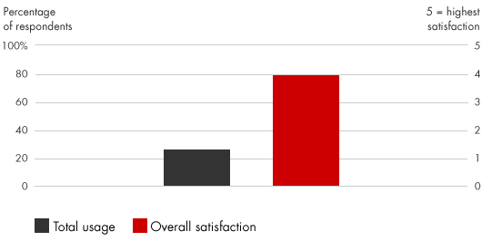
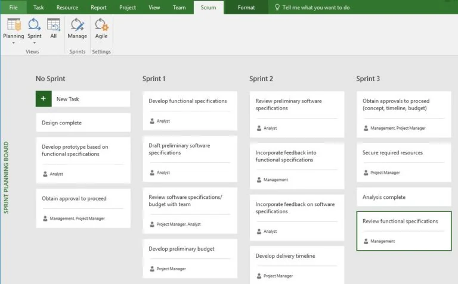

📘معرفی ابزار
مدیریت چابک یک رویکرد مبتنی بر تکرار برای پروسه برنامه ریزی و مدیریت پروژه است. امروزه، مدیران از تکنیکهای چابک برای طیف وسیعی از فعالیتها استفاده میکنند (از جمله نوآوری در محصولات و خدمات، فرآیندها، و مدلهای تجاری). در طیف گستردهای از صنایع، مدیریت چابک ارزشمندترین نوآوریهای بازار را سریعتر و با ریسک کمتر به ارمغان میآورد و همزمان مشارکت تیمی و رضایت مشتری را نیز بهبود میبخشد. اسکرام با رویکرد مدیریت چابک بسیار رایج است، اگر چه روشهایی مانند کانبان۱، توسعه ناب۲ و راهاندازی ناب۳ نیز متداول هستند.
🆕بهروزرسانی ۱۴۰۵
این بخش در نسخهٔ آنلاین ۱۴۰۵ افزوده شده است. متن اصلی کتاب (آبان ۱۳۹۹) در بخشهای بعد بدون تغییر آمده است.
آمار و شواهد تازه
- در ۱۸امین گزارش State of Agile (Digital.ai، ۲۰۲۵) استفاده از هوش مصنوعی در میان پاسخدهندگان از ۶۴٪ به ۸۴٪ رسیده است. (منبع: ITPro)
- ۷۴٪ از پاسخدهندگان از مدلهای چابک ترکیبی/سفارشی (hybrid, blended, homegrown) استفاده میکنند. (منبع: ITPro)
- ۷۶٪ میگویند فشار برای نشاندادن بازگشت سرمایهٔ چابکی، سرمایهگذاریها و نقشها را تغییر میدهد؛ ولی تنها نیمی احساس میکنند میتوانند قابلاتکا و پاسخگو تحویل دهند. (نمونهٔ ۱۸امین گزارش حدود ۳۵۰ نفر است.) (منبع: Digital.ai)
- گزارش ۱۷ام (۲۰۲۴، ۷۸۸ پاسخدهنده): ۷۱٪ از چابکی در چرخهٔ توسعهٔ نرمافزار استفاده میکردند. (منبع: Digital.ai)
چه چیزی تغییر کرده؟
روند اصلی، حرکت از «اجرای مراسمها» به «اثبات ارزش» است: تیمها باید خروجی چابکی را با شاخصهای کسبوکاری نشان دهند. هوش مصنوعی در برنامهریزی اسپرینت، تحلیل بکلاگ و پیشبینی ریسک وارد شده، و بیشتر سازمانها چارچوب ثابت (مثلاً فقط Scrum) را با نسخهٔ ترکیبی جایگزین کردهاند.
نمونه ابزارها و نرمافزارهای امروزی
نامها صرفاً نمونهاند و توصیه یا تبلیغ تجاری نیستند؛ شرایط دسترسی و تحریمها را برای سازمان خود بررسی کنید.
منابع این بخش
🧩فرآیند اجرا
- تیم رهبری فرصتهای نوآوری چابک را شناسایی و دنبال میکند.
- مدیران اجرایی، تیمهای کوچک، چند رشتهای و خودگردان را برای بررسی فرصتهای برتر جمع می کنند.
- یک "صاحب ایده" با تیم کار میکند تا ضمن ایجاد یک چشم انداز، فهرست دقیقتری از فرصتهای بالقوه ایجاد کنند و ضمن اولویتبندی آنها مشخص کنند که چه موقع و چگونه میتوان از فرصتها استفاده کرد و به نتایج ملموسی رسید. لازم است یک نفر تیم را در روشهای مدیریت چابک هدایت کند، موانع را برداشته و پیشرفت کار را تسریع کند.
- تیم چند رشتهای یک نقشه راه ایجاد میکند، مشکلات پیچیده را به کارهای قابل مدیریت بیشتر تجزیه میکند و بر روی مهمترین فرصتها تمرکز میکند. این تیم در چرخههای کوتاه و تکراری (که اغلب اسپرینت۴ نامیده میشود) کار میکند تا نمونههای اولیه کاری ایجاد کند.
- مشتریانی که همکاری نزدیکی با تیم دارند ، نمونههای اولیه کار را آزمایش میکنند و بازخورد واضح و سریع در مورد ترجیحات واقعی خود ارائه میدهند. سپس تیم رویکرد خود را برای سرمایهگذاری در این بازخورد مشتری تطبیق میدهد.
- این تیم بطور مداوم فرصتهایی را برای بهبود اثربخشی خود شناسایی میکند.
💼موارد استفاده در کسبوکار
- مدیریت زمان و تمرکز رهبر سازمان از سطوح خرد به سطوح راهبردی
- تطبیق استراتژیها از سرمایهگذاری در شرایط ایستا به سرمایهگذاری در شرایط متغییر
- افزایش تمرکز هر شخص بر روی یک موضوع با کاهش کارهای چند وظیفهای و پراکنده
- از بین بردن کارهای کم ارزش و بیهوده
- بهبود مدیریت تغییرات
- نوآوری موفق در حوزههای مختلف از توسعه محصولات و بازاریابی تا بهبود زنجیره تامین.
📈میزان محبوبیت در طی زمان

🧪نمونه ابزار / الگو

این تصویر که یک نمونه برنامهریزی پروژه بر اساس متدلوژی چابک را نشان میدهد در نرمافزار مایکروسافت پروجکت تهیه شده است. در این نرم افزار قابلیت مدیریت و کنترل پروژه و گزارشگیری در نماهای مختلف اسکرام و گانت چارت امکان پذیر است. برای کسب اطلاعات بیشتر به Advaiya [۲] مراجعه شود.
⬇️چکلیست قابلدانلود
چکلیست اجرایی این ابزار را دانلود و در سازمان خود تکمیل کنید. گامها از فرآیند اجرای همین صفحه برداشته شدهاند و ستونهای مسئول، موعد و وضعیت برای پیگیری تیمی خالی گذاشته شده است.
⬇ دانلود چکلیست (Word) · مدیریت چابک📚مراجع مطالعه بیشتر
- Bain & Company, Agile Management: https://www.bain.com/insights/management-tools-agile-management
- Advaiya, DELIVERING AGILE PROJECTS USING MS PROJECT SERVER/PROJECT ONLINE, www.advaiya.com/blog/delivering-agile-projects-using-ms-project-server-project-online/
- Cobb, Charles G. The Project Manager’s Guide to Mastering Agile: Principles and Practices for an Adaptive Approach. Wiley, 2015.
- Cohn, Mike. Agile Estimating and Planning. Prentice Hall, 2005.
- Reinertsen, Donald G. The Principles of Product Development Flow: Second Generation Lean Product Development. Celeritas Publishing, 2009.
- Ries, Eric. The Lean Startup. Crown Publishing Group, 2011.
- Rigby, Darrell K., Jeff Sutherland, and Hirotaka Takeuchi. “Embracing Agile.” Harvard Business Review, May 2016, pp. 40–50.
- Rubin, Kenneth S. Essential Scrum: A Practical Guide to the Most Popular Agile Process. Addison-Wesley Professional, 2012.
- Sutherland, Jeff, and J.J. Sutherland. Scrum: The Art of Doing Twice the Work in Half the Time. Crown Business, 2014.
معادلهای انگلیسی
- ۱Kanban
- ۲Lean Development
- ۳Lean Startup
- ۴Sprints